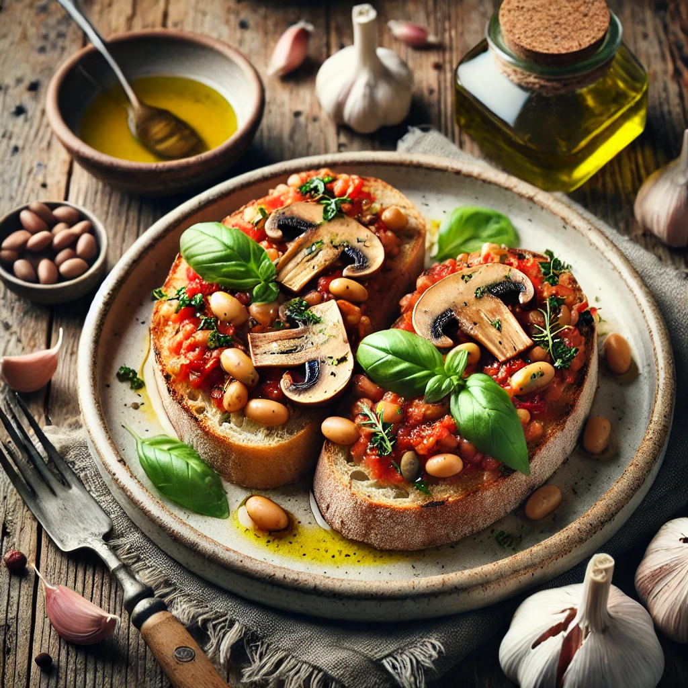

Tomatiga Bönor med Svamp och Vitlök på Surdegsbröd
Ingredienser:
- För bönröran:
- 2 burkar Cannellinibönor eller vita bönor (ca 400 g), avrunna och sköljda
- 400 g Krossade tomater
- 200 g Champinjoner eller skogssvamp, skivade
- 1 lök, finhackad
- 3 vitlöksklyftor, tunt skivade
- 2 msk Olivolja
- 1 msk Tomatpuré
- 1 msk Rödvinsvinäger
- 1 tsk Torkad timjan
- 1 tsk Torkad oregano
- 1 tsk Paprikapulver
- Chiliflakes, efter smak (valfritt)
- Salt och svartpeppar, efter smak
- Färsk basilika eller persilja, för garnering
- För surdegsbrödet:
- 4 skivor Surdegsbröd
- Olivolja, för pensling
- 1 vitlöksklyfta, för gnidning
Instruktioner:
Tips:
För en extra lyxig touch, toppa med smulad fetaost eller vegansk ost, och servera med en fräsch sallad vid sidan av!
Timer:
minuter
30:00